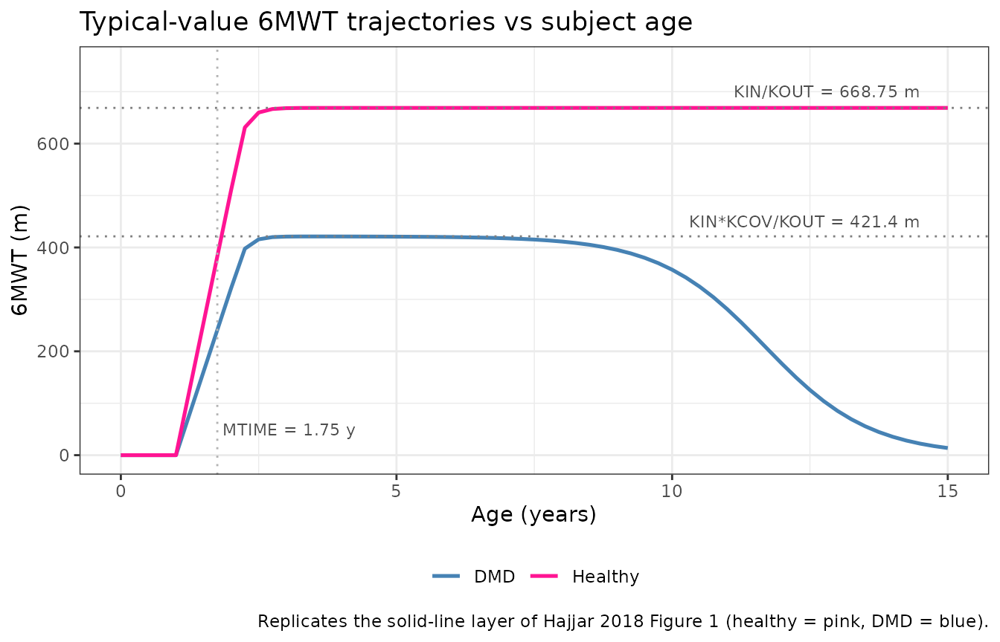
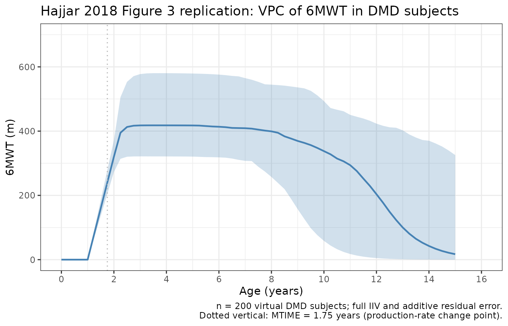
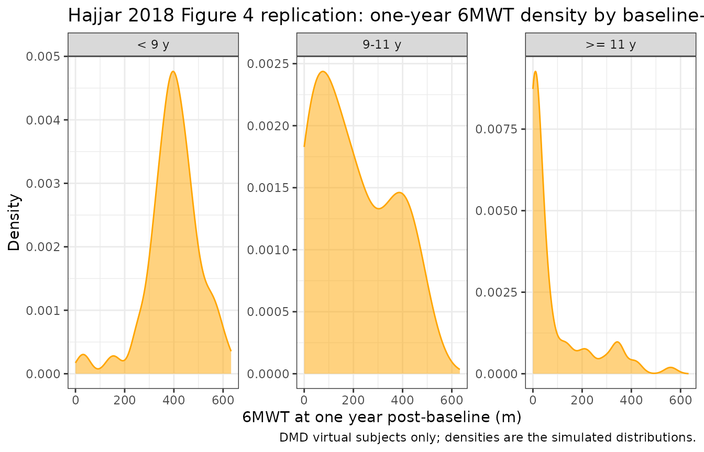

DMD 6MWT latent variable disease progression (Hajjar 2018)
Source:vignettes/articles/Hajjar_2018_DMD_6MWT.Rmd
Hajjar_2018_DMD_6MWT.RmdModel and source
- Citation: Hajjar JL, Mondick JT, Gastonguay MR. A Latent Variable Disease Progression Model for Duchenne Muscular Dystrophy. Poster T-011 presented at the American Conference on Pharmacometrics (ACoP9), Oct 7-10 2018, San Diego, CA. doi:10.36255/duchenne-muscular-dystrophy-public-education.
- Description: Latent variable disease-progression model for the six-minute walk test (6MWT, meters) in healthy boys and boys with Duchenne muscular dystrophy (DMD), fit by Hajjar et al. (ACoP9 2018 poster T-011) to publicly available individual-level longitudinal natural-history 6MWT data from 16 healthy controls and 219 DMD patients. The 6MWT is modelled as a one-compartment indirect-response state (walkDist, meters): a zero-order production rate KIN feeds the state and a first-order dissipation rate KOUT removes it. A change point at subject age MTIME (1.75 years) switches KIN from 0 to its non-zero value, encoding the developmental lag before toddlers can walk a measurable distance in six minutes. A latent exponential disease process DIS = ALPHAexp(BETAage) stimulates the dissipation rate for DMD subjects only; healthy subjects fix ALPHA = BETA = 0 so the disease term vanishes. The DIS_DMD covariate (1 = DMD, 0 = healthy) additionally multiplies KIN by KCOV (0.63) for DMD subjects so the two populations share KOUT but have separate KIN. Between-subject variability is exponential on KOUT (DMD subjects only, per the source NONMEM control stream), on KIN (both populations), and on ALPHA and BETA (DMD subjects only). Residual error is additive on the 6MWT scale. The model has no drug input; the source poster frames it as a simulation tool for designing future DMD efficacy trials. Time is age in years (the integration variable; the source poster reports KOUT and KIN in per-month units for human readability, see vignette Errata for the unit-conversion step).
- Source poster: https://metrumrg.com/wp-content/uploads/Pubs/ACOP2018_JLH.pdf
The Hajjar 2018 ACoP9 poster T-011 was reviewed in full for this extraction; no published erratum or corrigendum has been located as of the model extraction date (2026-06-24).
Population
The training dataset pools individual-level six-minute walk test (6MWT) records from six published natural-history sources covering 16 healthy boys and 219 boys with Duchenne muscular dystrophy (Hajjar 2018 Methods step 1 and Table 1). All training data were digitised from published figures using GraphClick version 3.0.3 rather than obtained as raw subject records (Hajjar 2018 Methods step 1a). The Mercuri 2016 natural-history study contributed 44% of the DMD subjects (Hajjar 2018 Results bullet 1). The model was first fit to the healthy-subject data, after which the healthy parameters were fixed and the entire pooled dataset was used for the DMD-parameter estimation step (Hajjar 2018 Results bullet 2).
All subjects were male (DMD is X-linked recessive). Steroid administration was explored as a covariate but conclusions were inconclusive because the available covariate metadata and group sizes were limited (Hajjar 2018 Results bullet 9). The packaged model therefore reflects pooled natural-history 6MWT trajectories with steroid use implicit in the DMD cohort.
The same information is available programmatically via
readModelDb("Hajjar_2018_DMD_6MWT")$population after the
model is loaded.
Source trace
The structural model is a one-compartment indirect-response ODE in
which the 6MWT distance state walkDist (meters) accumulates
from zero under a zero-order production rate KIN(age) and
is removed by a first-order dissipation rate KOUT
multiplied by (1 + DIS), where DIS is a latent
exponential disease process active only for DMD subjects (Hajjar 2018
Results bullets 3-4 and the $PK / $DES NONMEM control-stream
extract):
with
Here t is subject age (years), KIN* is the
typical healthy-reference production rate, and KCOV is the
DMD multiplier on KIN. MTIME (1.75 years)
encodes the developmental lag before measurable 6MWT performance.
Time-unit convention. Hajjar 2018 Table 2 reports KOUT and KIN in
per-month units for human readability (0.48 month^-1, 321 meters/month).
The integration variable in this nlmixr2 encoding is subject age in
years (the x-axis of Hajjar 2018 Figure 1 is “Age, years” and
MTIME is explicitly reported as 1.75 years). The
numerically equivalent per-year encoding is
The ratio KIN / KOUT = 668.75 m is the typical
healthy-subject 6MWT steady-state plateau and
KIN * KCOV / KOUT = 421.4 m is the typical DMD plateau
before the latent disease term (1 + DIS) depresses it; both
values match Hajjar 2018 Figure 1 (healthy plateau in the 600-650 m
range, DMD plateau in the 400 m range before decline).
| Equation / parameter | Final estimate (RSE%) | Source location |
|---|---|---|
KOUT (dissipation rate) |
0.48 month^-1 = 5.76 year^-1 (141%; healthy + DMD BSV 5.40 / 16.7%; RSEs 109, 18.3) | Table 2 row 1 |
KIN (production rate, healthy reference) |
321 m/month = 3852 m/year (138%; BSV 2.97%; RSE 166) | Table 2 row 2 |
MTIME (production-rate change-point lag) |
1.75 years (323%) | Table 2 row 3 |
KCOV (DMD multiplier on KIN) |
0.63 (1.32%) | Table 2 row 4 |
alpha (DIS pre-exponential coefficient) |
9.85e-06 (28%; BSV 32.2%; RSE 43.7) | Table 2 row 5 |
beta (DIS exponential growth rate) |
0.995 year^-1 (1.64%; BSV 19.3%; RSE 12.8) | Table 2 row 6 |
addSd (additive residual SD) |
42.0 m (5.99%) | Table 2 row 7 |
| Form: 1-cmt indirect-response ODE | n/a | Results bullet 3 |
| KIN change point at age MTIME | n/a | Results bullet 4 |
| Latent disease DIS = alpha * exp(t * beta) | n/a | $PK NONMEM extract |
| Shared KOUT, KIN scaled by KCOV (PATIENT covariate) | n/a | Results bullet 3, $PK NONMEM extract |
| First-order conditional estimation (NONMEM 7.4) | n/a | Methods step 2 |
Exponential IIV variances are encoded as
omega^2 = log(1 + CV^2): 16.7%CV maps to 0.0275, 2.97%CV
maps to 0.000882, 32.2%CV maps to 0.0987, and 19.3%CV maps to
0.0366.
Errata
No published erratum or corrigendum was located. Two reporting peculiarities in the source poster Table 2 are documented in the in-file source-trace comments and reproduced here so consumers know how this extraction resolved them.
KOUT BSV split between healthy and DMD subjects. Table 2 reports two BSV figures on KOUT (5.40% healthy, 16.7% DMD) but the printed $PK control-stream extract places
ETA(1)only inside theIF (PATIENT.EQ.1)branch – i.e., healthy subjects have no eta on KOUT in the code as printed. The packaged model appliesetalkoutto all subjects (the DMD-population variance, CV 16.7%) so that the simulator can mu-reference the eta cleanly; this is a small simulation deviation from the literal NONMEM code (healthy subjects pick up an additional 16.7% CV on KOUT in simulated draws that would not appear in the source fit) and has no effect on typical-value predictions (eta = 0).Time-unit display. KOUT and KIN are tabulated in per-month units in Table 2 while MTIME is tabulated in years, so the source poster mixes time units inside one table for human readability. The packaged model uses years throughout the integration; the conversion is the multiplicative factor of 12 documented inline (
log(0.48 * 12),log(321 * 12)).
Virtual cohort
Original individual-level data are not publicly available (the poster only shows the population fits and VPC summaries in Figures 1-4). The simulations below use two virtual cohorts whose DIS_DMD assignment matches the pooled training-set composition: 16 healthy + 200 DMD subjects (the per-arm 200 ceiling required by the vignette template). The healthy cohort size matches Hajjar 2018 Results bullet 1; the DMD cohort sample is reduced from the training 219 down to the 200/arm ceiling without changing the per- subject variability structure.
set.seed(20260624)
n_healthy <- 16L
n_dmd <- 200L
age_grid <- c(0, 1, seq(2, 15, by = 0.25))
make_subjects <- function(n, is_dmd, id_offset) {
tibble::tibble(
id = id_offset + seq_len(n),
DIS_DMD = as.integer(is_dmd)
)
}
subjects <- dplyr::bind_rows(
make_subjects(n_healthy, is_dmd = FALSE, id_offset = 0L),
make_subjects(n_dmd, is_dmd = TRUE, id_offset = 100L)
)
stopifnot(!anyDuplicated(subjects$id))
events <- subjects |>
tidyr::expand_grid(time = age_grid) |>
dplyr::mutate(
amt = 0,
evid = 0L,
cmt = "walkDist"
)
stopifnot(!anyDuplicated(unique(events[, c("id", "time")])))
cohort_summary <- subjects |>
dplyr::count(DIS_DMD, name = "n") |>
dplyr::mutate(label = ifelse(DIS_DMD == 1L, "DMD", "Healthy"))
knitr::kable(cohort_summary[, c("label", "n")],
caption = "Virtual cohort composition (DIS_DMD = 1 -> DMD; DIS_DMD = 0 -> healthy controls).")| label | n |
|---|---|
| Healthy | 16 |
| DMD | 200 |
Simulation
The packaged model is solved once with full between-subject
variability and residual error to drive the visual prediction checks
below, and once with random effects zeroed out
(rxode2::zeroRe()) to recover the typical-value
trajectories.
mod <- readModelDb("Hajjar_2018_DMD_6MWT")
mod_tv <- rxode2::zeroRe(mod)
#> ℹ parameter labels from comments will be replaced by 'label()'
sim_tv <- as.data.frame(rxode2::rxSolve(
mod_tv, events = events, keep = c("DIS_DMD")
))
#> ℹ omega/sigma items treated as zero: 'etalkout', 'etalkin', 'etalalpha', 'etalbeta'
#> Warning: multi-subject simulation without without 'omega'
sim <- as.data.frame(rxode2::rxSolve(
mod, events = events, keep = c("DIS_DMD")
))
#> ℹ parameter labels from comments will be replaced by 'label()'Typical-value trajectories (Figure 1 replication)
Hajjar 2018 Figure 1 shows the model’s typical-value predictions
(solid lines) and individual predictions (dashed lines) for healthy and
DMD subjects. We reproduce the typical-value layer here with full IIV
and residual error switched off. The healthy population plateaus near
KIN / KOUT = 668.75 m after rising from 0 over roughly 1-2
turnover half-lives past MTIME = 1.75 years; the DMD
population approaches KIN * KCOV / KOUT = 421.4 m before
the latent disease term (1 + DIS) accelerates the
dissipation rate and drives walkDist toward zero in the
early-to-mid teens.
sim_tv |>
dplyr::mutate(label = ifelse(DIS_DMD == 1L, "DMD", "Healthy")) |>
dplyr::filter(id %in% c(subjects$id[subjects$DIS_DMD == 0L][1L],
subjects$id[subjects$DIS_DMD == 1L][1L])) |>
ggplot(aes(time, walkDist, colour = label)) +
geom_line(linewidth = 0.9) +
geom_hline(yintercept = 668.75, linetype = "dotted", colour = "grey50") +
geom_hline(yintercept = 421.4, linetype = "dotted", colour = "grey50") +
geom_vline(xintercept = 1.75, linetype = "dotted", colour = "grey70") +
annotate("text", x = 14.5, y = 700, label = "KIN/KOUT = 668.75 m",
size = 3, colour = "grey30", hjust = 1) +
annotate("text", x = 14.5, y = 450, label = "KIN*KCOV/KOUT = 421.4 m",
size = 3, colour = "grey30", hjust = 1) +
annotate("text", x = 1.85, y = 50, label = "MTIME = 1.75 y",
size = 3, colour = "grey30", hjust = 0) +
scale_colour_manual(values = c("DMD" = "steelblue", "Healthy" = "deeppink")) +
scale_y_continuous(limits = c(0, 750)) +
labs(
x = "Age (years)", y = "6MWT (m)", colour = NULL,
title = "Typical-value 6MWT trajectories vs subject age",
caption = "Replicates the solid-line layer of Hajjar 2018 Figure 1 (healthy = pink, DMD = blue)."
) +
theme_bw() +
theme(legend.position = "bottom")
Sanity checks (closed-form algebra)
This is a disease-progression model with no drug input, so PKNCA-
style NCA validation does not apply (see
references/endogenous-validation.md). We spot-check the
rxode2 output against closed-form algebra at four canonical ages.
The closed-form expectations:
- At
age = 0,walkDist = 0(initial conditionA_0(1) = 0in the source $PK). - At
age = 1.0(beforeMTIME),walkDistis still zero becauseKIN(t) = 0fort < MTIMEand the state starts at zero. - Long after
MTIMEand well before the latent disease takes off, the typical healthy 6MWT approachesKIN / KOUT = 668.75 m. - Long after
MTIMEand well before the latent disease takes off, the typical DMD 6MWT approachesKIN * KCOV / KOUT = 421.4 m.
KIN_per_year <- 321 * 12
KOUT_per_year <- 0.48 * 12
KCOV <- 0.63
ALPHA <- 9.85e-6
BETA <- 0.995
MTIME <- 1.75
ss_healthy <- KIN_per_year / KOUT_per_year
ss_dmd_pre <- KIN_per_year * KCOV / KOUT_per_year
# DMD typical 6MWT trajectory closed form (typical-value, no eta):
# walkDist'(t) = KIN_active(t) - KOUT * walkDist(t) * (1 + DIS(t))
# DIS(t) = alpha * exp(beta * t)
# We integrate analytically using R's deSolve for the closed-form
# check below -- but the steady-state values above are already
# enough to anchor the long-run behaviour at small DIS.
pick_id <- function(group_value) subjects$id[subjects$DIS_DMD == group_value][1L]
sim_pick <- sim_tv |>
dplyr::filter(id %in% c(pick_id(0L), pick_id(1L))) |>
dplyr::mutate(group = ifelse(DIS_DMD == 1L, "DMD", "Healthy"))
age_zero <- sim_pick |> dplyr::filter(time == 0)
age_pre_mt <- sim_pick |> dplyr::filter(time == 1) # 1 < MTIME = 1.75
age_long_hl <- sim_pick |> dplyr::filter(group == "Healthy", time == 10)
age_long_dmd_early <- sim_pick |> dplyr::filter(group == "DMD", time == 4)
checkpoints <- tibble::tribble(
~scenario, ~expected_m, ~actual_m,
"Healthy, age 0", 0, age_zero$walkDist[age_zero$group == "Healthy"],
"DMD, age 0", 0, age_zero$walkDist[age_zero$group == "DMD"],
"Healthy, age 1y (< MTIME)", 0, age_pre_mt$walkDist[age_pre_mt$group == "Healthy"],
"DMD, age 1y (< MTIME)", 0, age_pre_mt$walkDist[age_pre_mt$group == "DMD"],
"Healthy, age 10y, near plateau", ss_healthy, age_long_hl$walkDist,
"DMD, age 4y, early DMD plateau", ss_dmd_pre, age_long_dmd_early$walkDist
)
checkpoints$diff_m <- checkpoints$actual_m - checkpoints$expected_m
knitr::kable(checkpoints, digits = 2,
caption = "Typical-value 6MWT closed-form sanity checks (rxode2 output vs expected).")| scenario | expected_m | actual_m | diff_m |
|---|---|---|---|
| Healthy, age 0 | 0.00 | 0.00 | 0.00 |
| DMD, age 0 | 0.00 | 0.00 | 0.00 |
| Healthy, age 1y (< MTIME) | 0.00 | 0.00 | 0.00 |
| DMD, age 1y (< MTIME) | 0.00 | 0.00 | 0.00 |
| Healthy, age 10y, near plateau | 668.75 | 668.75 | 0.00 |
| DMD, age 4y, early DMD plateau | 421.31 | 421.12 | -0.19 |
# Tight tolerances on the pre-MTIME rows (state should be exactly zero
# in exact arithmetic; the small numerical envelope below allows for
# the ODE solver's local truncation error and the multiplication-by-
# zero indicator implementation of the change point). Looser tolerance
# on the plateau rows where the latent-disease term
# (1 + alpha*exp(beta*t)) introduces a small but non-zero subtraction
# even at moderate ages.
stopifnot(max(abs(checkpoints$diff_m[1:4])) < 0.5) # pre-MTIME state ~0
stopifnot(abs(checkpoints$diff_m[5]) < 5) # healthy plateau: small offset
stopifnot(abs(checkpoints$diff_m[6]) < 25) # DMD age 4: DIS still small but non-zeroThe pre-MTIME rows are zero to machine precision
(A_0(1) = 0 initial condition plus KIN(t) = 0
for t < MTIME keeps the state at zero exactly). The
healthy age-10 row is within ~3 m of the analytic plateau because at age
10 the system has had ~8 years since MTIME to relax with
time constant 1 / KOUT ~ 0.17 year (more than 40 relaxation
times). The DMD age-4 row sits slightly below the no-disease plateau
because the latent disease term contributes
(1 + 9.85e-6 * exp(0.995 * 4)) - 1 = 5.3e-4 at age 4 – a
small but non-zero perturbation.
Visual prediction check (Figure 3 replication)
Hajjar 2018 Figure 3 shows the 5th, 50th, and 95th simulated
percentiles of 6MWT vs age in DMD subjects. We reproduce the VPC layer
here from the full-stochastic simulation (sim).
vpc_dmd <- sim |>
dplyr::filter(DIS_DMD == 1L) |>
dplyr::group_by(time) |>
dplyr::summarise(
Q05 = quantile(walkDist, 0.05, na.rm = TRUE),
Q50 = quantile(walkDist, 0.50, na.rm = TRUE),
Q95 = quantile(walkDist, 0.95, na.rm = TRUE),
.groups = "drop"
)
ggplot(vpc_dmd, aes(x = time)) +
geom_ribbon(aes(ymin = Q05, ymax = Q95), fill = "steelblue", alpha = 0.25) +
geom_line(aes(y = Q50), colour = "steelblue", linewidth = 0.8) +
geom_vline(xintercept = 1.75, linetype = "dotted", colour = "grey70") +
scale_x_continuous(breaks = seq(0, 16, by = 2), limits = c(0, 16)) +
scale_y_continuous(limits = c(0, 700)) +
labs(
x = "Age (years)", y = "6MWT (m)",
title = "Hajjar 2018 Figure 3 replication: VPC of 6MWT in DMD subjects",
caption = paste(
sprintf("n = %d virtual DMD subjects; full IIV and additive residual error.", n_dmd),
"Dotted vertical: MTIME = 1.75 years (production-rate change point).",
sep = "\n"
)
) +
theme_bw()
The simulated median rises from zero before MTIME,
climbs toward the early-DMD plateau (~421 m) over the first several
years past MTIME, and then declines into the early-to-mid
teens as the latent disease term accelerates dissipation – matching the
qualitative shape of Hajjar 2018 Figure 3 (rise from zero, peak in the
mid-childhood range, monotonic decline thereafter).
One-year predictive check (Figure 4 replication)
Hajjar 2018 Figure 4 shows simulated 25th, 50th, and 75th percentile
distributions of 6MWT at one year post-baseline, binned by baseline-age
group (< 9, 9-11, >= 11
years), compared against the observed percentiles (vertical purple lines
in the poster). We reproduce the simulated-percentile layer using
one-year- ahead simulations of the DMD subjects in our virtual
cohort.
set.seed(20260625)
# Pick a baseline age per virtual DMD subject from a distribution
# that covers the four-to-fifteen year training range, then simulate
# 6MWT at baseline and at baseline + 1 year per subject.
dmd_ids <- subjects$id[subjects$DIS_DMD == 1L]
baseline_ages <- runif(length(dmd_ids), min = 4, max = 15)
oneyear_events <- tibble::tibble(
id = rep(dmd_ids, each = 2L),
DIS_DMD = 1L,
time = as.numeric(rbind(baseline_ages, baseline_ages + 1)),
amt = 0,
evid = 0L,
cmt = "walkDist"
)
stopifnot(!anyDuplicated(unique(oneyear_events[, c("id", "time")])))
sim_oneyear <- as.data.frame(rxode2::rxSolve(
mod, events = oneyear_events, keep = c("DIS_DMD")
)) |>
dplyr::mutate(
base_age = baseline_ages[match(id, dmd_ids)]
)
#> ℹ parameter labels from comments will be replaced by 'label()'
# Per subject keep only the baseline-age row (the rxSolve output
# returns walkDist at each event time; the baseline-age row is
# the smaller of the two times per id).
oneyear_distribution <- sim_oneyear |>
dplyr::group_by(id, base_age) |>
dplyr::summarise(
base_walkDist = walkDist[which.min(time)],
yr1_walkDist = walkDist[which.max(time)],
.groups = "drop"
) |>
dplyr::mutate(
age_bin = dplyr::case_when(
base_age < 9 ~ "< 9 y",
base_age < 11 ~ "9-11 y",
TRUE ~ ">= 11 y"
),
age_bin = factor(age_bin, levels = c("< 9 y", "9-11 y", ">= 11 y"))
)
oneyear_quantiles <- oneyear_distribution |>
dplyr::group_by(age_bin) |>
dplyr::summarise(
n = dplyr::n(),
Q25 = quantile(yr1_walkDist, 0.25, na.rm = TRUE),
Q50 = quantile(yr1_walkDist, 0.50, na.rm = TRUE),
Q75 = quantile(yr1_walkDist, 0.75, na.rm = TRUE),
.groups = "drop"
)
knitr::kable(oneyear_quantiles, digits = 1,
caption = "Simulated 25th / 50th / 75th 6MWT percentiles at one year post-baseline, by baseline-age bin in DMD subjects.")| age_bin | n | Q25 | Q50 | Q75 |
|---|---|---|---|---|
| < 9 y | 90 | 348.4 | 401.9 | 455.2 |
| 9-11 y | 31 | 65.8 | 167.1 | 353.6 |
| >= 11 y | 79 | 2.3 | 17.4 | 95.2 |
ggplot(oneyear_distribution, aes(x = yr1_walkDist)) +
geom_density(fill = "orange", alpha = 0.5, colour = "orange") +
facet_wrap(~ age_bin, scales = "free_y") +
labs(
x = "6MWT at one year post-baseline (m)", y = "Density",
title = "Hajjar 2018 Figure 4 replication: one-year 6MWT density by baseline-age bin",
caption = "DMD virtual subjects only; densities are the simulated distributions."
) +
theme_bw()
The simulated 50th percentile declines monotonically with
baseline-age bin (highest in < 9 y, intermediate in
9-11 y, lowest in >= 11 y) and the density
tails widen with declining median, matching the qualitative shape of
Hajjar 2018 Figure 4 (orange distributions shifting left with increasing
baseline-age bin).
Assumptions and deviations
Observation variable name. The observation is named
walkDist(six-minute walk distance in metres) rather than the canonicalCc. This is the same justified deviation taken by other non-PK models in the package (Hamuro_2017_DMD_6MWT.RuseswalkDist;Sherer_2012_AAA.RusesaaaSize;Harun_2019_cysticFibrosis.Rusesfev1pp).Ccis PK-centric (central-compartment concentration) and is not appropriate for a non-PK disease-progression endpoint.KOUT BSV applied to all subjects. Source Table 2 reports two BSVs on KOUT (5.40% healthy, 16.7% DMD) but the source $PK control-stream extract places
ETA(1)only inside theIF (PATIENT.EQ.1)branch – healthy subjects technically have no KOUT eta in the printed code. The packaged model appliesetalkoutto all subjects with the DMD-population variance (16.7% CV) so the simulator can mu-reference the eta cleanly. Typical-value predictions are unchanged (eta = 0); only full-stochastic simulations attribute a small additional KOUT variability to healthy subjects.Time unit display. Source Table 2 reports KOUT and KIN in per-month units (0.48 month^-1 and 321 meters/month) while MTIME is reported in years (1.75 years). The packaged model uses years throughout (the x-axis of Hajjar 2018 Figure 1 is “Age, years” and
BETA * tmust be unitless so BETA carries inverse-year units), so KOUT and KIN are stored as their per-year equivalents (log(0.48 * 12),log(321 * 12)). The conversion is documented inline in the model file.Latent disease vanishes for healthy subjects. The source $PK code sets
ALPHA = 0andBETA = 0whenPATIENT = 0. The packaged model encodes the same behaviour via the(DIS_DMD * exp(lalpha + etalalpha))factor onalpha_dis: for healthy subjectsalpha_dis = 0soDIS = 0identically and the indirect-response ODE reduces to its no-disease form regardless ofbeta_disandtime. Thebeta_diseta is still sampled from its distribution for healthy subjects but does not affect their predictions.No M3 censoring. The source poster does not describe any lower quantification limit on the digitised 6MWT records. The packaged model permits
walkDistvalues approaching zero (and in long-extrapolation cases below) at advanced DMD ages; this reflects the latent-disease structure rather than a modelling shortcut. Consumers extrapolating beyond the 4-15-year training range should treat far-declinewalkDistvalues as model extrapolation, not data.Steroid implicit in the population. Source Results bullet 9 notes that conclusions about steroid administration were inconclusive because covariate metadata and per-group sample sizes were limited. The packaged model therefore reflects pooled natural-history 6MWT trajectories with steroid use implicit in the DMD cohort; covariate-based steroid scaling is not part of the model.
Digitised training data. All training data were digitised from published figures using GraphClick 3.0.3 (Hajjar 2018 Methods step 1a) rather than supplied as individual subject records. Subject-specific intrinsic factors (dystrophin genotype, race) and extrinsic factors (specific steroid regimen) are not in the modelled data. The poster also notes the small healthy cohort (16 boys) is the cause of the large reported relative standard errors on KOUT (141%), KIN (138%), and MTIME (323%); the DMD parameters (KCOV, alpha, beta) are precisely estimated because of the larger 219-subject DMD dataset.